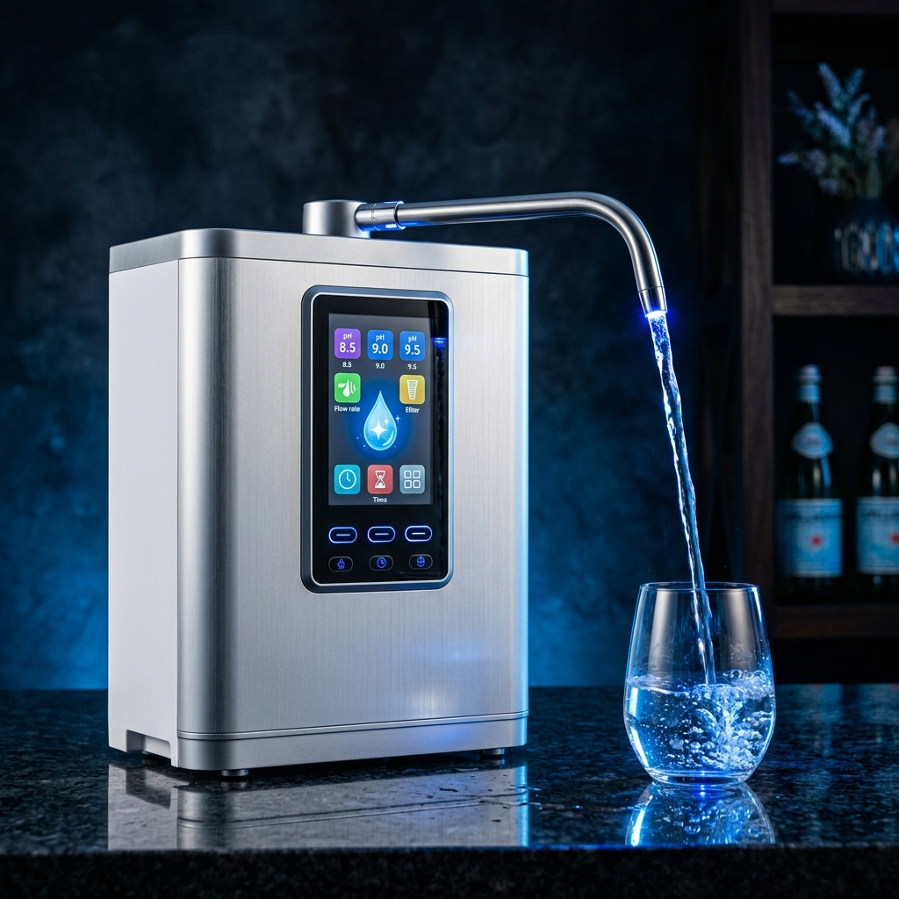
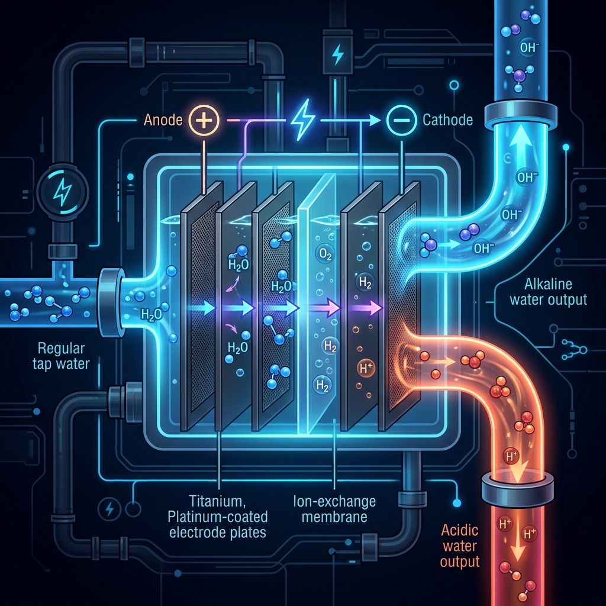
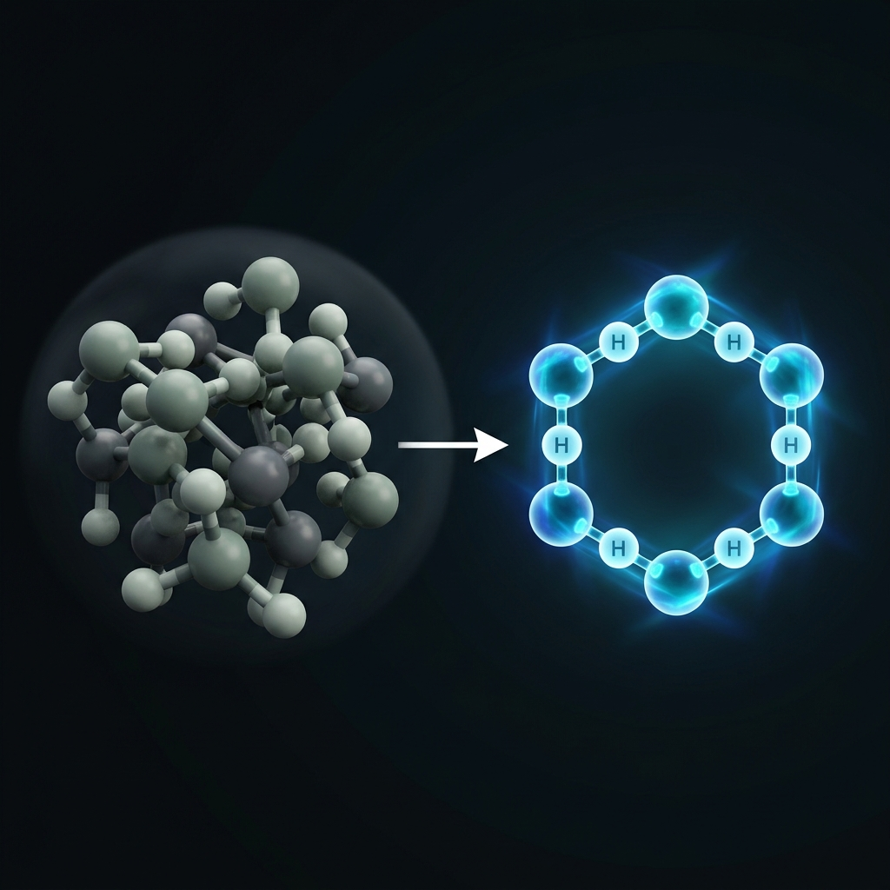
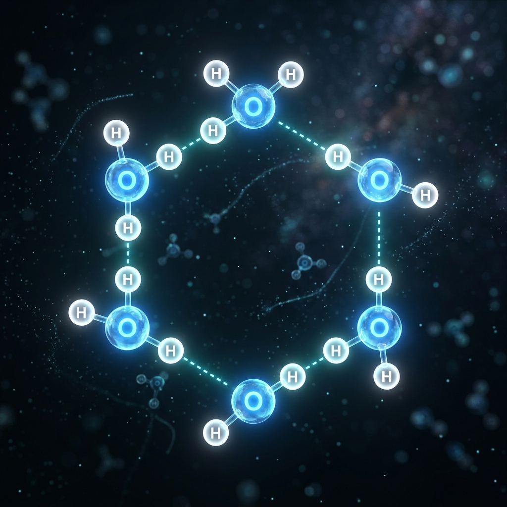

Agua producida por la innovadora tecnología de electrólisis de Enagic. Alcalina, antioxidante, hidrogenada y micro-estructurada — un agua que va mucho más allá de la simple filtración.
pH 8.5 – 9.5 para beber. Contrarresta la acidificación del organismo y favorece el equilibrio natural.
ORP negativo (-400 a -800mV). Neutraliza radicales libres y combate el estrés oxidativo celular.
Clusters de 5-6 moléculas vs. 10-13 del agua normal. Penetra las células con mayor facilidad.
Rica en hidrógeno molecular (H₂). El antioxidante más pequeño y eficiente de la naturaleza.
Estructura molecular hexagonal, la misma encontrada en los manantiales curativos del mundo.
Agua Kangen® es un agua producida por la innovadora tecnología de electrólisis de Enagic. Estos dispositivos no sólo filtran el agua del grifo, sino que la potabilizan y producen 5 tipos de agua diferentes, gracias a su sistema de electrólisis con placas de titanio bañadas al 100% en platino.
A diferencia de otros sistemas de filtración disponibles en el mercado —que eliminan incluso los minerales beneficiosos—, los ionizadores Kangen de Enagic mantienen los minerales intactos, proporcionando un agua de alta calidad que puede utilizarse para fines tan diversos como beber, cocinar, cuidar la belleza y la limpieza del hogar.
El Agua Kangen® contiene varios minerales esenciales como el Calcio, el Potasio y el Magnesio. Con tan sólo pulsar un botón, podrá crear el agua que ayudará al cuidado de sus plantas, cocinar una deliciosa comida o limpiar la mancha más rebelde.

La electrólisis del agua es un proceso científico en el que se hace pasar una corriente eléctrica a través del agua utilizando electrodos especiales. Este proceso separa el agua en dos corrientes:
Durante este proceso, el agua se reorganiza molecularmente, pasando de clusters grandes e irregulares (10-13 moléculas) a micro-clusters hexagonales de 5-6 moléculas, mucho más pequeños y biocompatibles con las células de nuestro organismo.
La electrólisis no solo filtra: reestructura el agua a nivel molecular, creando un agua viva que hidrata, desintoxica y protege.

El potencial de Oxidación-Reducción (ORP) mide la capacidad del agua para oxidar o reducir. Un ORP negativo significa que el agua tiene capacidad antioxidante — combate los radicales libres que envejecen y enferman nuestras células.
Cuanto más negativo, mayor poder antioxidante
La mayoría de las aguas embotelladas y del grifo tienen un ORP positivo (+200 a +600 mV), lo que significa que oxidan las células. El Agua Kangen, con su ORP fuertemente negativo, protege las células del daño oxidativo.

Los ionizadores Kangen de Enagic cuentan con unas placas de 100% Titanio bañadas en Platino, que cambian la estructura molecular presente en el agua del grifo (15 a 20 moléculas por cluster), transformándola en agrupaciones más pequeñas de 5 a 6 moléculas por cluster.
Gracias a este proceso nuestro cuerpo absorbe mejor las propiedades del agua, aumentando los niveles de hidratación. Las placas forradas (Mesh), empleadas en los demás ionizadores ofrecidos en el mercado, no consiguen obtener este resultado.
10-13 moléculas por cluster. Difícil absorción celular.
5-6 moléculas por cluster. Máxima penetración celular.
El sistema de electrólisis Kangen elimina patógenos y contaminantes que otros sistemas dejan pasar:
También filtra y neutraliza metales pesados y elementos químicos nocivos:
A diferencia de otros sistemas que eliminan todo —incluido lo beneficioso—, Kangen preserva los minerales esenciales que su cuerpo necesita cada día.
Fundamental para huesos, dientes y el funcionamiento del sistema nervioso. Previene la osteoporosis.
Regula la presión arterial, el ritmo cardíaco y la contracción muscular. Esencial para el equilibrio celular.
Interviene en más de 300 reacciones enzimáticas. Combate el estrés, mejora el sueño y la recuperación muscular.
La estructura micro-cluster del Agua Kangen permite que el agua penetre las membranas celulares con una eficiencia muy superior al agua del grifo o embotellada. Esto se traduce en tres beneficios fundamentales:
Los ionizadores de Enagic no sólo le ayudarán a mantenerse hidratado y saludable, también le alentará a mantener su hogar limpio y brillante. ¡Descubra todo lo que los ionizadores de Kangen® pueden hacer por usted!

No todas las aguas son iguales. Esta comparativa muestra por qué el Agua Kangen está en una categoría completamente diferente.
| Característica | Agua del Grifo | Agua Embotellada | Ósmosis Inversa | Agua Kangen® |
|---|---|---|---|---|
| pH Alcalino (8.5 – 9.5) | ✕ | ✕ | ✕ | ✓ |
| ORP Negativo (antioxidante) | ✕ | ✕ | ✕ | ✓ |
| Micro-cluster (5-6 moléculas) | ✕ | ✕ | ✕ | ✓ |
| Rica en Hidrógeno molecular | ✕ | ✕ | ✕ | ✓ |
| Preserva minerales esenciales | Parcial | Variable | ✕ Los elimina | ✓ |
| Elimina contaminantes tóxicos | ✕ | Variable | ✓ | ✓ |
| 5 tipos de agua en 1 dispositivo | ✕ | ✕ | ✕ | ✓ |
| Sin plásticos/contaminación | ✓ | ✕ Microplásticos | ✓ | ✓ |
| Certificación ISO médica | ✕ | ✕ | ✕ | ✓ ISO 13485 |
Cada tipo de agua producida por los ionizadores Kangen tiene aplicaciones específicas. Descúbrelas en profundidad en el módulo dedicado.
pH 11.5 — No potable. Limpieza profunda, eliminación de pesticidas y desengrasante.
pH 8.5 – 9.5 — Potable. Para beber, cocinar, café, té, plantas y mascotas.
pH 7.0 — Potable. Ideal para preparar medicamentos y comida para bebés.
pH 6.0 — No potable. Tónico facial, cuidado del cabello e hidratación de la piel.
pH 2.5 — No potable. Desinfectante, bactericida, higiene bucal y pie de atleta.